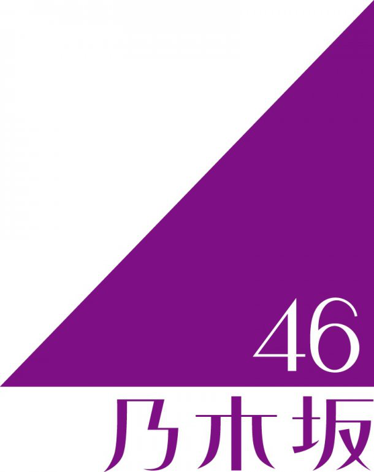
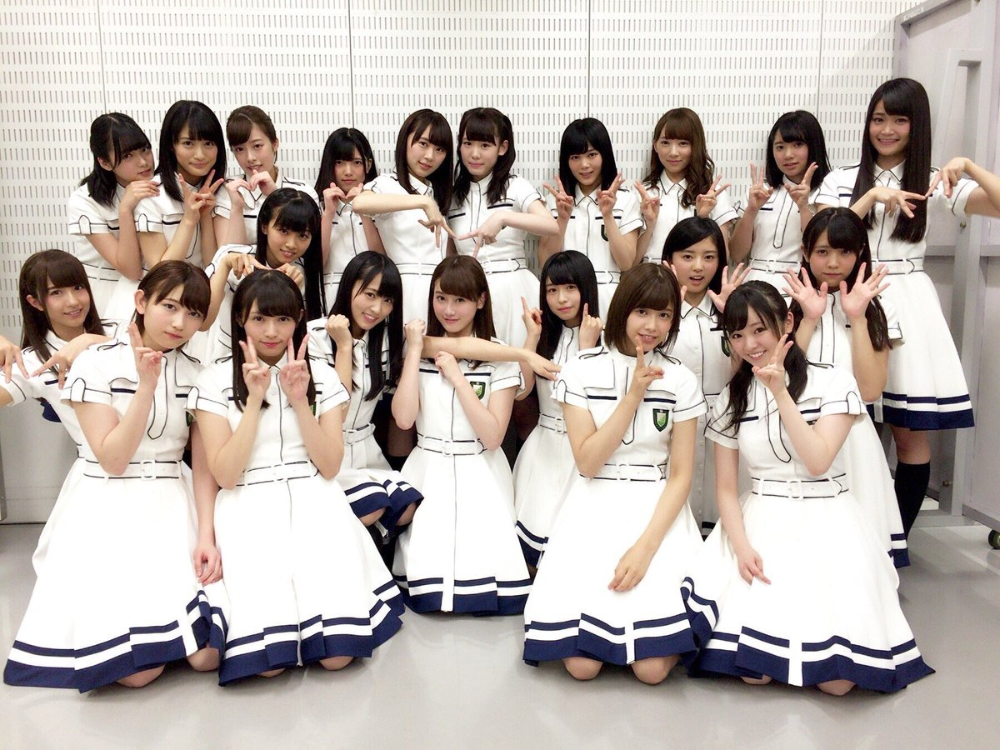

|
 |
 |
ประวัติ nogizaka46
nogizaka46 เป็นวงไอดอลญี่ปุ่นที่ อากิโมโตะ ยาซุชิ เป็นผู้ก่อตั้งและโปรดิวเซอร์ของเกิร์ลกรุ๊ปชื่อดังของญี่ปุ่น AKB48 โดยจะแตกต่างออกไปจากวงพี่น้องของ AKB48 อย่าง SKE48, NMB48
หรือ SDN48 โดย Nogizaka46 จะตั้งตัวเป็นคู่แข่งอย่างเป็นทางการของ AKB48
สมาชิกของ Nogizaka46 จะเลือกอย่างพิถีพิถันและโปรดิวซ์โดย อากิโมโต้ และ SONYMYSIC อิกิโมโต้เผยถึงที่มาของ
ชื่อวงว่า 'Nogizaka' มาจากชื่อสถานที่ที่จะเป็นเวทีออดิชั่นสุดท้ายของงานนี้ ซึ่งก็คือ 'อาคาร SME Nogizaka' ส่วนเลข '46'
มาจากความคิดที่ว่า ถึงจะมีสมาชิกน้อยกว่า AKB48 แต่ก็ไม่พ่ายแพ้แน่นอน

สำหรับการออดิชั้นจะเริ่มเปิดรับสมัครเวทีแรกในวันที่ 20 ก.ค. 2554 คัดเลือกจากเอกสารใบสมัคร ส่วนการคัดเลือกรอบ 2 คัดจากการสัมภาษณ์ในวันที่ 6 และ 7 สิงหาคม ใน 7 เมืองทั่วประเทศญี่ปุ่น (ซัปโปโร่, เซนได, โกเตียว, นาโงย่า, โอซาก้า, ฟุกุโอกะ และ โอกินาว่า) และเวทีสุดท้ายในวันที่ 20 และ 21 สิงหาคม คัดจากการแสดงทักษะความสามารถ ผู้ที่ผ่านการคัดเลือกเป็น Nogizaka46 รุ่นแรกจะมีทั้งหมด 20 คน จะเริ่มทำกิจกรรมผ่านทางรายการโทรทัศน์และออกเพลงเดบิว ภายใต้สังกัดโซนี่มิวสิกตั้งแต่เดือนตุลาคม 2554
มีผู้สมัครเข้าออดิชั่นถึง 38,934 คน ซึ่งในการออดิชั่นรอบสุดท้าย เมื่อวันที่ 20-21 สิงหาคม 2554 ผู้ผ่านเข้ารอบ 56 คน ถูกคัดเหลือ 36 คน ไม่ใช่ 20 คนอย่างที่ตั้งไว้แต่แรก ภายหลังออกไปก่อนเปิดตัวอีก 2 คน เหลือ 34 คน และได้ถูกประกาศชื่อในวันที่ 22 สิงหาคม และมีการประกาศเซนบัตสึทั้ง 16 คน
